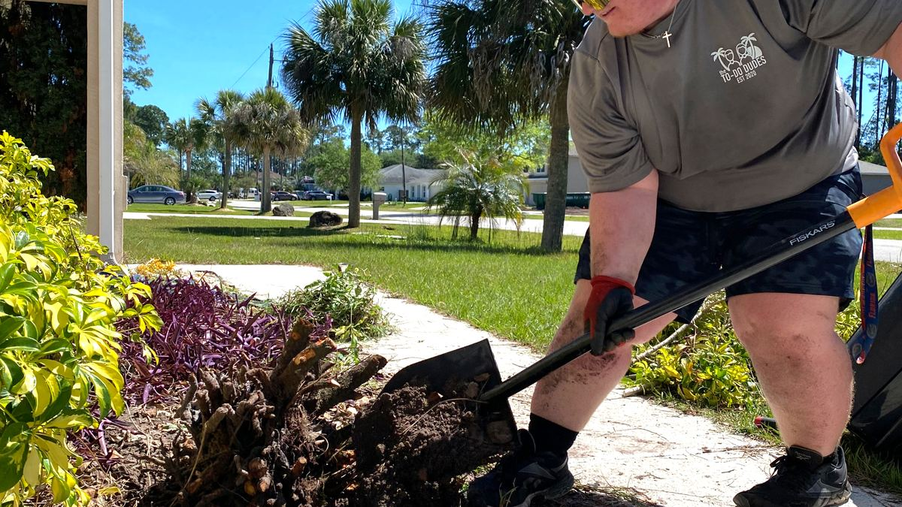

Yard Work Help in Palm Coast, FL: What to Expect When You Book a Crew

If your yard is on your to-do list every single week and somehow never gets done, you are not alone. Between the Florida heat that hits by 9 a.m., the weeds that grow back before you can finish the driveway, and the fact that most people have about 45 minutes of actual free time on a Saturday, yard work is the chore that most Palm Coast homeowners keep moving to next weekend.
Hiring a crew to handle it is more straightforward than most people expect. Here is what the process actually looks like.
What does a yard work crew actually do?
The short version: they show up, they do the physical work, and they leave your yard looking like you have your life together.
More specifically, a yard work booking with The To-Do Dudes covers weeding garden beds, walkways and driveways, bush and shrub trimming, debris clean up and haul-away, mulch spreading, and general outdoor clean up before a storm, a party, or a visit from someone whose opinion you care about.
What we do not do is chemical lawn treatment or mowing with our own equipment. This is labor, not landscaping. You have the tools, or you just need hands. That is what this service is built for.
How much does yard work in Palm Coast cost?
Pricing is hourly and based on crew size. Most yard clean up jobs in Palm Coast run one to three hours with two team members. The total depends on how much ground you are covering and how long that Brazilian pepper situation has been going on.
If you want a ballpark before booking, call (386) 597-0722 and describe what you are working with. We can give you a reasonable estimate over the phone.
How do I book?
Online or by phone. You pick the date, the time, and the number of team members you want. Most jobs can be scheduled within the same week.
Who actually shows up?
Every To-Do Dude goes through an application, a screening call, an interview, in-person onboarding, and supervised field training before working any job independently, and our team is fully insured.
Still curious? Palm Coast runs on word of mouth. With 730+ five-star Google reviews from actual neighbors, you can read what people think before you book.
What should I do before the crew arrives?
Not much. Point them to the area you want worked, tell them what you are going for, and let them handle it. If you have specific instructions, jot them in the booking request. If you want to be home, great. If you have somewhere to be, that works too.
Is this worth it for a one-time job?
Yes. Nobody says you have to sign up for anything. A one-time yard clean up before hurricane season, before you list your house, before your in-laws arrive from Ohio and comment on your landscaping, all of that qualifies. Book it once, see how it goes.
That said, if you find yourself booking again, the Chore Club membership is worth a look. It locks in regular scheduling and comes with perks for members.
What time of year is busiest?
Spring and early summer, when everything grows at a pace that feels genuinely personal. Fall is popular too, right before snowbird season kicks in and half of New York and Pennsylvania pulls into the neighborhood asking where the Publix is.
One more thing
The on-time guarantee is real. If the crew is even one minute late, you get $10 off per team member. For a service business in Florida, that is a bold promise. We have kept it long enough to stake the whole company on it.